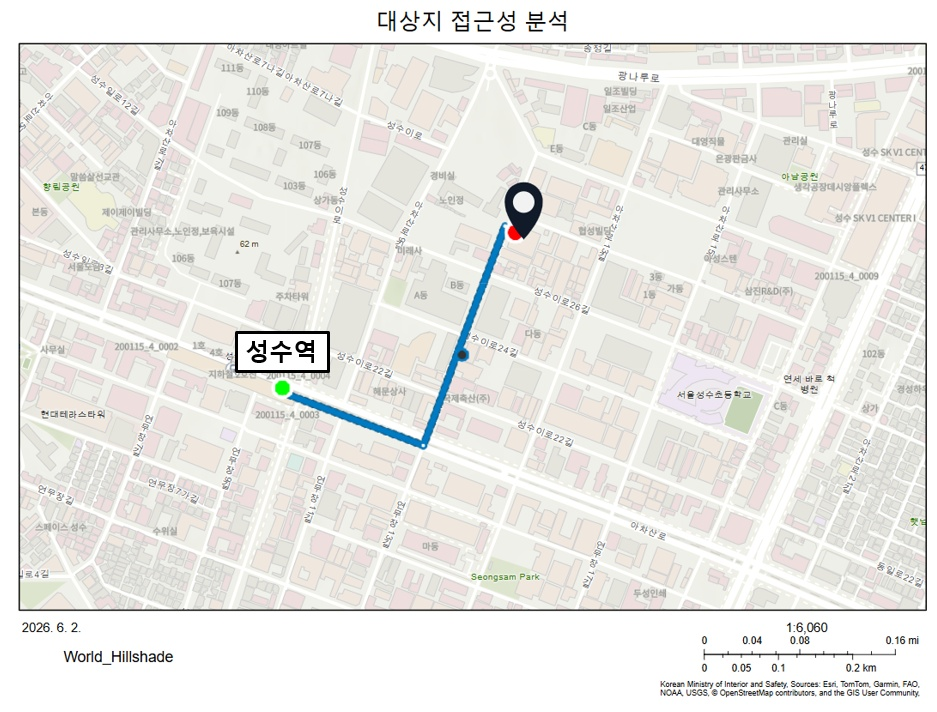
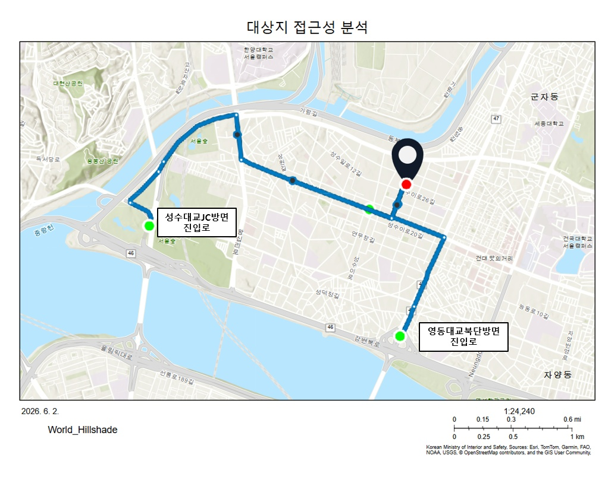
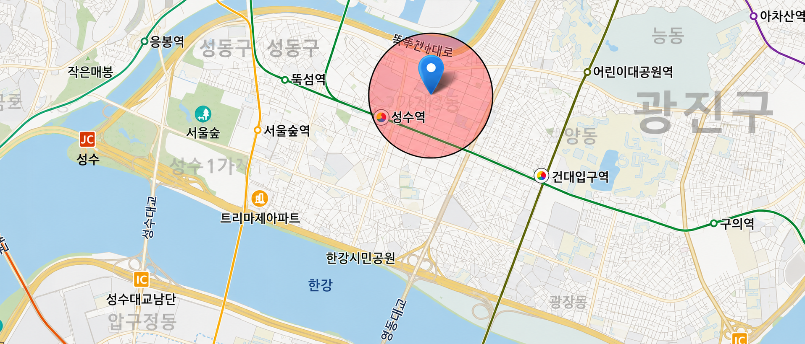

현황 분석
보행 접근성, 개발 격차, 산업 블록 내부 구조를 체계적으로 분석합니다.
01 — 보행 접근성
산업 블록의 폐쇄적 구조로 인해 보행 접근성이 낮은 구간을 파악합니다. 지하철역 반경 내 보행 단절 지점을 중심으로 분석합니다.

보행 접근성 분석도

보행 단절 구간
02 — 개발 격차
성수동 내 고밀 개발 지역과 노후 산업 공간이 혼재하는 양상을 분석합니다. 블록 단위의 용도·밀도 변화를 시각화합니다.
급격한 개발 압력을 받는 구역
기존 산업 기능이 남아있는 구역
개발과 산업이 공존하는 경계 구역
03 — 블록 구조
블록 내부의 공간 구성, 공개공지 현황, 필로티 분포를 파악하고 개입 가능한 지점을 도출합니다.
공개공지
블록 내 공개공지 위치 및 규모 분석. 보행 통로 연결 가능성 검토.
필로티
기존 건축물 필로티 위치 및 보행 연속성 확보 가능 지점.
종합
분석을 종합한 개입 가능 구간 우선순위 설정.
04 — 대상지 산업분석
서울시 공식 통계(2024)에 따르면 성수동 4개 행정동의 인쇄업 사업체 261개로, 성동구 전체 인쇄업의 88%가 이곳에 집중되어 있습니다.
성수동 인쇄업 사업체 수
성수 4개 행정동 합산
성동구 전체의 87.9%
인쇄업 종사자 수
인쇄업 + 인쇄관련산업
성수동 4개 행정동 합산
서울시 자치구 순위
성동구 기준 (297개)
중구·영등포구에 이어
성수동 행정동별 인쇄업 사업체 수
성수동 행정동별 인쇄업 종사자 수
출처: 서울특별시, 「서울특별시 기본통계 — 출판·인쇄 및 기록매체 복제업」, 2024년 기준 / stat.eseoul.go.kr
05 — 대상지 생활권 현황
대상지 반경 0.5km 이내 인구·가구·주택 현황입니다. 총 면적 0.78km² 내 9,797명이 거주하며, 직주혼재 성격이 강한 지역입니다.

총 인구
반경 0.5km · 총면적 0.78km²
총 가구
1인 가구 46.1% · 친족 가구 50.1%
인구 (연령대)
전체 9,797명
인구 (성별)
전체 9,797명
가구 유형
전체 4,501가구
주택 유형
전체 2,651호
출처: 통계지리정보서비스(SGIS), 생활권역 통계지도, 2024년 기준 / sgis.mods.go.kr